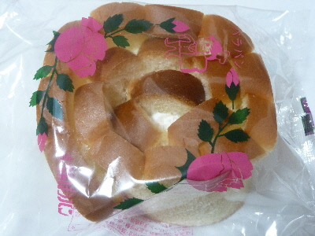
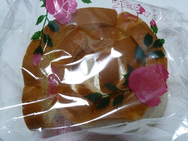
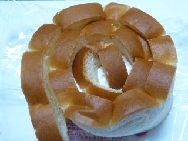

なんぽうパンのバラパンをよく見るようになりましたね。
2018/01/17
テレビで紹介されたみたいですね。それ以降よく見る気がします。

いっぱい売ってるので食べてる人も多いんでしょうね。
私も買ってみました。
あーシンプルな味だなー。
島根県出雲市知井宮町1274-6
更新日 : 2018/01/17
2018/01/17
テレビで紹介されたみたいですね。それ以降よく見る気がします。

いっぱい売ってるので食べてる人も多いんでしょうね。
私も買ってみました。
あーシンプルな味だなー。
2015/05/20

普通のバラパンを食べるのはたぶん久しぶりです。

久々に食べた感想。食パンにクリームがはさんであるシンプルな味だ。
こんな味だったなー。バラパンは美味しいって印象があるんだけど、たまにしか食べてないんだよなー。
私は子供のころ、お菓子はパンよりもスナック菓子が好きだったな。せんべいやポテトチップとか塩が効いたものが好きでした。
今は何でも食べるけど。